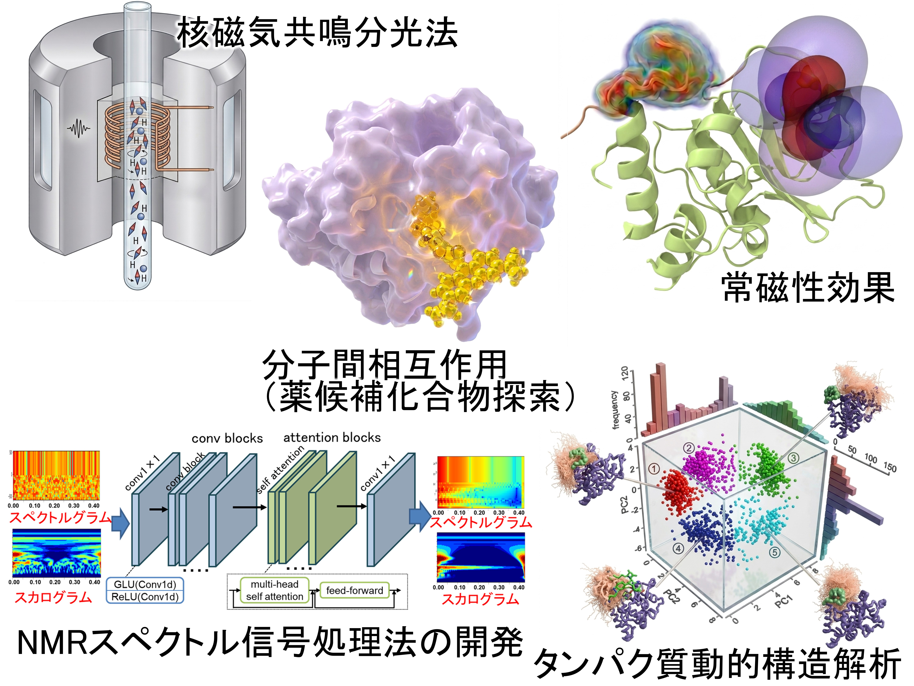

View More Photos
At the Biophysical Chemistry Laboratory, we investigate the structures, functions, and interactions of biological macromolecules, particularly proteins, using physicochemical approaches such as NMR spectroscopy, computational chemistry, machine learning, and small-angle X-ray scattering. Our goal is to deepen our understanding of biological phenomena and apply our findings to areas including drug discovery.
Main Analytical Methods:
Main Research Topics:

Here we present research achievements associated with the Biophysical Chemistry Laboratory, including peer-reviewed papers, books, and invited lectures. Click a category below to view the corresponding list.
Positions available
Department of Life Science, Faculty of Advanced Engineering
Chiba Institute of Technology
Building 1, 4th Floor
2-17-1 Tsudanuma, Narashino, Chiba 275-0016, Japan
Tel: +81-(0)47-478-0236
Email: ikeya.teppei ＠ chibatech.ac.jp